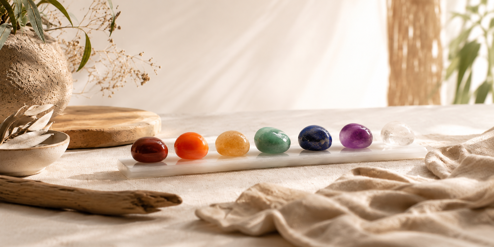
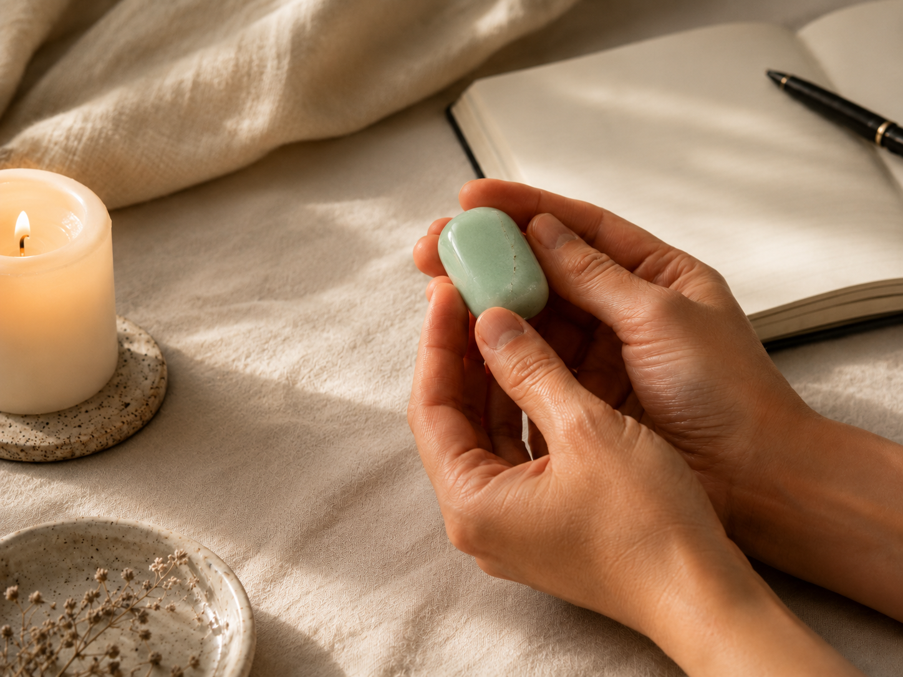
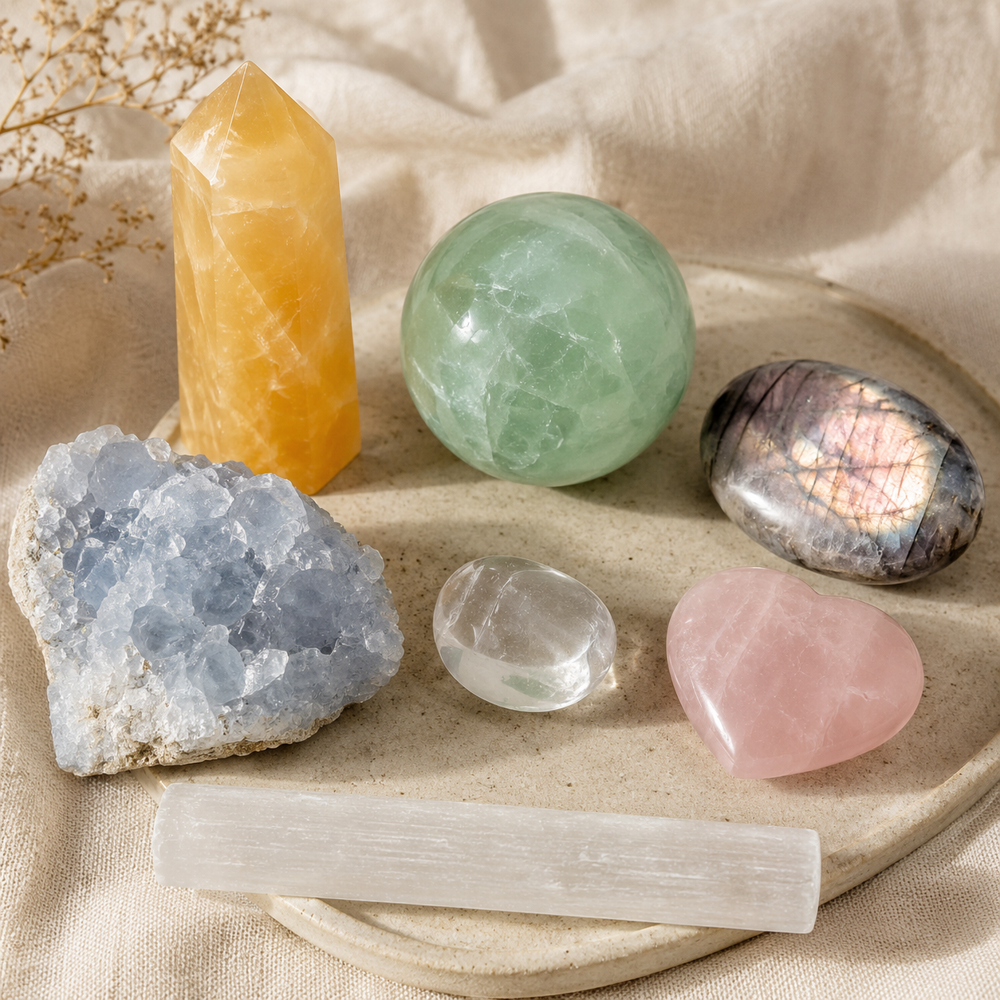
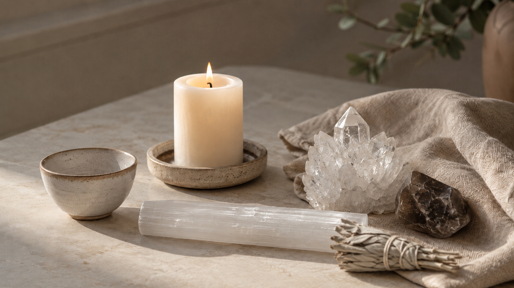
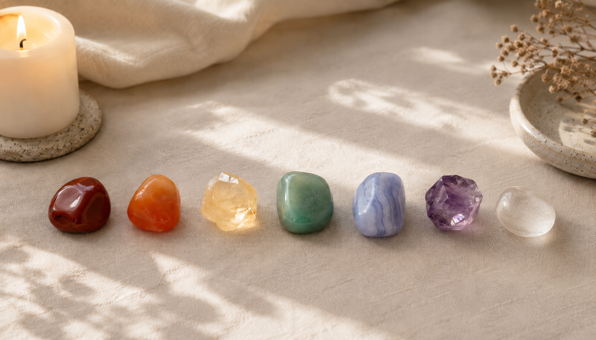
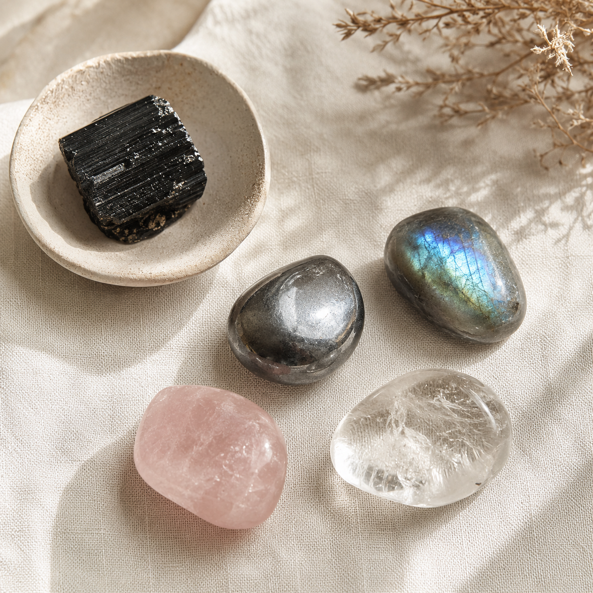
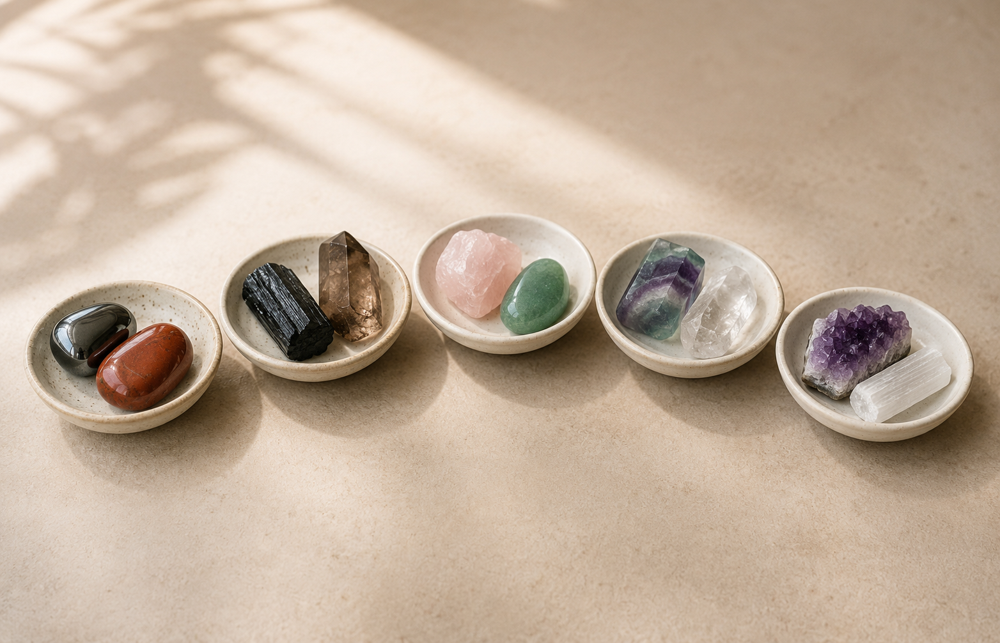
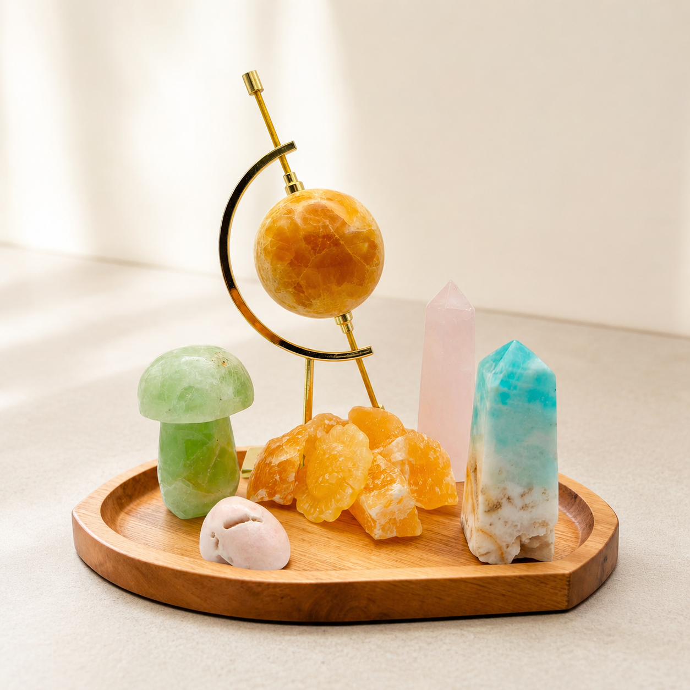
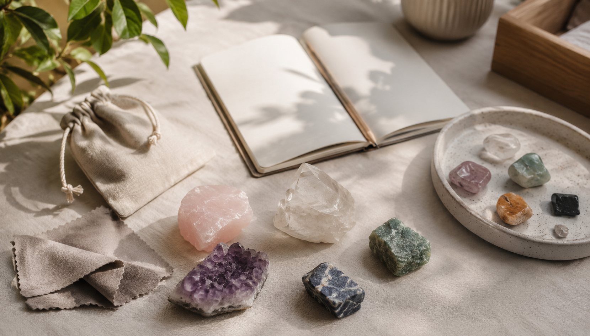
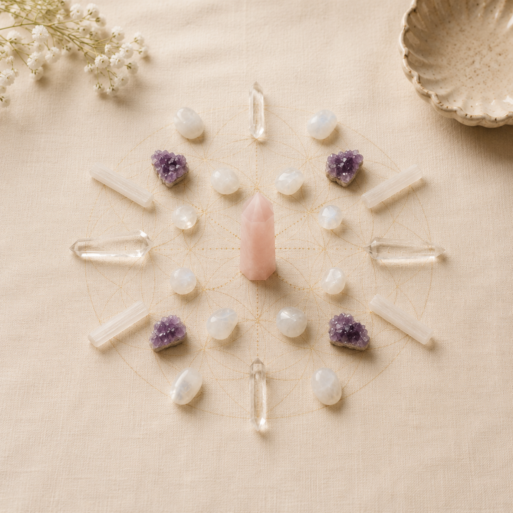

Build your crystal knowledge
one shelf at a time.
Start with the Essentials, then explore by color, intention, family, chakra, or collector tier.
Browse the library your way
inner calm


| Method | How | Best for |
|---|---|---|
| Holding | In one or both hands during meditation, breathwork, or quiet time | Direct energetic work, grounding, emotional processing |
| Carrying | Pocket, pouch, or bag — kept close throughout the day | Ongoing support, protection, subtle reminders |
| Wearing | Jewelry — closest to the skin and specific body areas | Chakra work, sustained energy, intentional adornment |
| Placing | On the body during rest, on a nightstand, desk, or altar | Environmental energy, sleep support, space-holding |
| Gridding | Arranging multiple stones in geometric patterns with a clear intention | Amplification, manifestation, space clearing |
| Meditating | Hold or place on corresponding chakra; sit quietly and observe | Deep inner work, intuitive downloads, focused healing |
Wrong timing. Some stones feel too activating when you're already overwhelmed, or too grounding when you need to move energy. Put it down and come back.
It's working, and you're resisting it. The stones that make us uncomfortable are sometimes doing exactly the right thing. Notice what's being stirred up before deciding it's not for you.


| Method | Effect | Notes |
|---|---|---|
| Sunlight | Activating, energizing, solar — great for action-oriented stones | 30 minutes max; some stones fade (see below) |
| Moonlight | Intuitive, receptive, feminine — ideal for emotional and spiritual work | Overnight; safe for all stones |
| Intention | You are the charger — hold the stone and breathe your purpose into it | Works best after cleansing; most direct method |
| Crystal cluster | Place on amethyst, quartz, or citrine cluster to charge passively | 24 hours; clusters need their own periodic cleansing |
| Sacred geometry grid | Placing in a grid with clear quartz amplifies specific intentions | Program the grid first with your intention |





| Method | When to use it |
|---|---|
| Intuition: which stone pulls your attention, feels right in your hand, or keeps catching your eye? | This is your primary signal. |
| Intention: what do you actually need right now? Use the Choose by Intention tab to find stones by need. | When you have a clear goal but no strong pull |
| Properties: look up specific properties, chakras, or energetic roles to narrow down. | Research mode; building a targeted collection |
If your gut says Black Tourmaline even though you "should" want Rose Quartz, your energy body often knows what it needs before your mind does.
Fill the gaps deliberately. Check your collection against the major energetic role categories. If you have nothing for grounding or protection, you have a real gap.
Know what you display vs. what you work with. Display stones can be anything beautiful. Working stones should be ones you've cleansed, set intention with, and actually used.
One really good piece beats ten mediocre ones. A high-quality, ethically sourced stone has more presence than a bucket of tumbles.
| Hardness | Durability | Care notes | Examples |
|---|---|---|---|
| 1–3 | Fragile | Handle gently. No water, salt, or ultrasonic cleaners. Store separately. | Talc · Selenite · Halite · Calcite |
| 3–5 | Moderate | Avoid prolonged water contact. Can scratch easily. Wrap for storage. | Fluorite · Apatite · Kyanite |
| 5–6 | Average | Generally durable. Some water sensitivity; check the specific stone. | Opal · Labradorite · Turquoise |
| 6–7 | Durable | Durable for everyday use. Most can handle brief water contact. | Quartz · Moonstone · Garnet |
| 7–10 | Very Durable | Highly durable and scratch resistant. Safe for most care methods. | Topaz · Corundum · Tourmaline |
| Stone | Concern | Precaution |
|---|---|---|
| Malachite | Copper-based; dust is toxic | Don't polish dry; avoid in drinking water |
| Cinnabar | Mercury sulfide | Display only; wash hands after handling |
| Galena | Lead-based | Wash hands; keep away from children |
| Pyrite | Can release sulfuric acid when wet | Keep dry; don't use in water elixirs |
| Vanadinite | Vanadium content | Handle finished specimens only; wash hands |
What a grid actually does
A crystal grid is a geometric arrangement of stones set with a shared intention. The geometry matters because different shapes direct energy differently. A triangle focuses and points. A circle contains and protects. A star both sends and receives. The stones amplify each other's qualities because they're in relationship, not working in isolation.
The most important element is not the geometry. It is the moment of activation. Before you place the final stone, hold the intention clearly. State it aloud or silently. The grid holds that frequency until you dismantle it.
